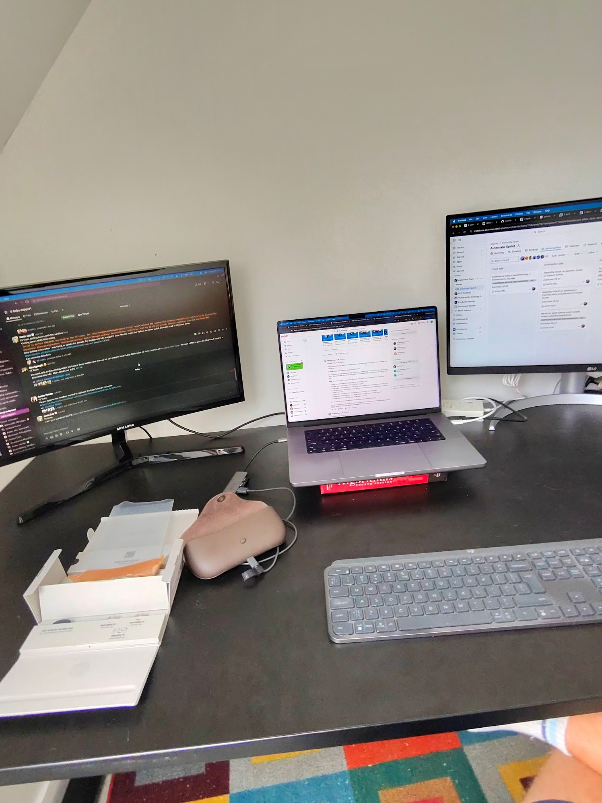
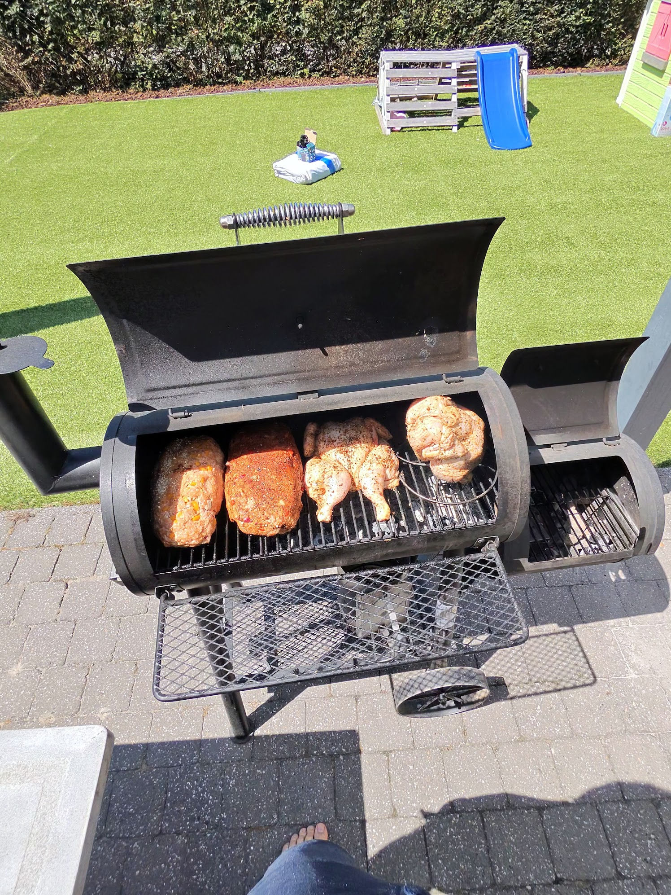
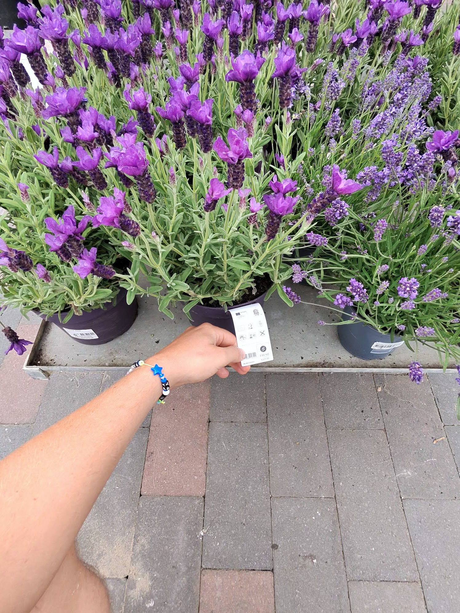

I almost sent them back on day one. Thirty-six hours, three factory resets, two Reddit threads, and one very specific Wi-Fi trick later, I was finally wearing functional AI glasses. Here's what I've learned since.
The setup that nearly broke me
I'm a computer science graduate. I've spent my career building AI systems, shipping production software, debugging distributed pipelines. I say this not to brag but to set the baseline: I am not the target user who struggles with technology.
So when I tell you the Meta Ray-Ban Scriber Optics Gen 2 setup nearly defeated me, I want you to take that seriously.
The issue is specific and absurd: I run a Nothing Phone, which is Android-adjacent enough to confuse the Meta View app into a connectivity loop. The glasses create their own weak Wi-Fi hotspot during pairing. The problem? My phone kept silently falling back to my home network — faster, stronger, already connected — abandoning the glasses' network mid-handshake. The app would fail. I'd try again. Same result.
The fix — buried in a Reddit thread after considerable searching — was to enable airplane mode first, then manually re-enable Wi-Fi. This forces your phone to connect only to the glasses' network, with no fallback option. Classic Android prioritization bug, almost certainly a Nothing Phone edge case, but still: Meta, you nearly got a return request over something a Roborock robot vacuum handles without incident. Even my cheapest smart home gadgets guide you through the Bluetooth-then-Wi-Fi handshake flawlessly. This was a genuine low point.

I checked the forums and found plenty of others who'd hit the same wall. That's what really stings — this isn't an exotic edge case, it's a known failure mode that Meta hasn't fixed. For a €600 device, that's not acceptable. I came within minutes of boxing them back up.
Once they're working, the camera is genuinely great
The Scriber Optics frame is the prescription variant — lighter than the standard frames, transition lenses, and noticeably less bulky. Worth the premium if you wear glasses daily. One practical note: go with the low nose pads if you're active. The standard pads slid off my face when running or sweating. Small thing, big difference.
The camera quality surprised me. There's something qualitatively different about first-person footage — it captures the actual field of view, the angle you're looking at the world, not the staged shot you'd compose holding up a phone. And then there's the hyperlapse function, which I honestly didn't expect to use but kept reaching for. There's something funny and oddly satisfying about having a smoker full of meatloaf and chicken captured as a crisp overhead timelapse purely because I happened to be leaning over it.

Hey Meta, look at this plant
This is where the device genuinely surprised me. I was at a plant shop, looking for something for my home office. I tend to kill plants through neglect — I forget to water them, I misjudge their light requirements, I pick things that need more care than I'm willing to give. So I just asked: "Hey Meta, can you look at this plant? Would it work indoors? Does it need a lot of water?"
It told me about the plant's care requirements, whether it was suitable for a bedroom versus a home office, and flagged which ones would survive someone who forgets to water. That's not a use case I'd read about in any review. It emerged naturally from just... having a knowledgeable voice in your ear while you're standing in a shop.

I went home with a lavender plant. It's still alive and flowering on my desk as I write this — something I genuinely attribute to getting the right advice in the right moment, hands-free, while I was standing in front of the actual plant. That moment crystallized why the always-on, ambient form factor matters. The information arrived precisely when it was relevant, without any friction.
The conversation mode is the best and most awkward feature
You don't have to say "Hey Meta" between turns. Once you've started a conversation, you can keep going — follow-up questions, clarifications, tangents — without re-triggering the wake word. For a researcher who thinks in dialogue, this is the right design decision. It starts to feel less like issuing commands to a device and more like thinking out loud with someone who can respond.
The awkward part: you never quite know when it's stopped listening. After five or six turns, the session quietly ends. You might keep talking — expecting a response — and realize mid-sentence that you're just talking to yourself in public. There's no graceful way out of that. A gentle audio cue that the conversation has closed would solve this entirely. Right now it's just slightly embarrassing when it happens.
The AI questions I can't fully answer yet
I'm curious about what's running underneath. The visual recognition is good — plant identification, object recognition, contextual scene understanding. My guess is there's SAM-style segmentation involved at some level; the spatial awareness is too clean for pure classification. I'd love to read the technical paper if one ever surfaces.
On the audio side: I had a conversation with someone from ElevenLabs and came away fairly convinced the text-to-speech and STT pipeline is ElevenLabs-powered, or at least ElevenLabs-inspired. There was a moment that stuck with me — I asked a question about My Hero Academia and it briefly adopted the protagonist's voice in the response. Not a full impression, just a touch of it. That kind of contextual personality adjustment isn't something you get from Google Home or Alexa without explicit programming. It felt like a very deliberate design choice, and it worked.
I also did a bit of poking around on the LLM side. When I asked what it uses under the hood, it told me: Llama 4. When I pushed back — "ew, why Llama 4, don't you have something better?" — it got mildly defensive and explained that Llama 4 is actually a top-notch multimodal model available in Scout and Maverick variants. Which is technically accurate and also exactly what you'd expect a system prompted to be enthusiastic about its own stack to say. The interesting part is that Llama 4 is not exactly cutting-edge at this point — it's a model that has been thoroughly lapped by the current frontier. For a device launched in 2025, running a model that already felt dated by mid-2026 is a real limitation. Meta is vertically integrated enough to run their own stack on their own hardware, which is the right long-term bet — but they need to keep the model current if they want the AI experience to stay competitive.
The missing piece: it's still not an agent
The Gmail integration exists. I set it up. It doesn't really work in any meaningful way. You can't ask about your emails, reference your calendar, or have Meta pull context from your actual life. For something positioned as an AI companion, this is a significant gap. Right now it knows the world but it doesn't know you — and that distinction matters more than almost anything else for daily utility.
What I want is a device that can say "you have a call with a client in 20 minutes, you'd mentioned wanting to discuss X" while I'm making coffee. That would be a genuinely transformative product. What I have is a very smart, very capable chatbot in a frame. The difference is enormous.
Who should buy this: If you don't already have quality earbuds and decent sunglasses, the value proposition is real — you get crisp audio, an AI assistant, corrective lenses if you need them, and a camera, all in one device you'd be wearing anyway.
Who should wait: If you already have two of those three things, hold off. The AI experience is ahead of most consumer products I've tried, but it's not yet seamless enough to justify the upgrade unless you're genuinely curious about where this category is going.
The unlock: When Meta gives it real access to your personal data — email, calendar, messages — in a way that actually works, this becomes a different product entirely. Right now it's an excellent companion. Then it would be an actual agent. That gap is the whole ballgame.
I'm keeping them. The plant is thriving. The setup frustration has long faded. But Meta: please fix the Android pairing. And ship the Gmail integration that actually works. You're so close.